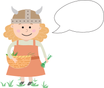
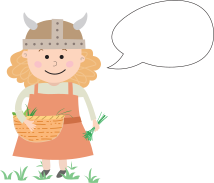

Spise som en viking!
Vi lærer dig at sanke som en ægte viking
Vi lærer dig at sanke som en ægte viking

Lær at sanke og lave mad som en ægte viking! “At sanke” er et gammelt vikingeord der dækker over “at samle”. Hvis du sanker, indsamler du mad, som du finder ude i naturen. Sankning kan også dække over indsamling af træ til bål, eller grankogler til pynt og dekorationer. Her på siden kan du lære om hvilke ingredienser vikingerne sankede og hvordan du selv kan komme i gang med at sanke.
 

I vikingetiden bestod kosten både af råvarer, som man sankede og som man selv dyrkede. De fleste familier havde deres egne husdyr såsom får, okse og høns som de fik mad fra, og derudover også en mark eller køkkenhave som de dyrkede. Da det ikke var alt mad, de dyrkede selv, sankede de også en del af ingredienserne. Det ville typisk være bær, frugt og planter.

I vikingetiden havde man ikke køleskabe og måtte derfor bruge andre metoder for at konservere madvarerne. Om sommeren og efteråret brugte man solen til tørre årets høst af grøntsager, frugt og bær. Så kunne de bruges over vinteren til madlavning. Mange af de retter vikinger levede af, kan stadig laves den dag i dag, med de samme ingredienser som vikingerne sankede i naturen. Nedenfor kan du se tre forskellige opskrifter på retter, som vikingerne spiste med ingredienser som du selv kan sanke i den danske natur. - Nedenfor ses opskrifter som vikingerne lavede med ingredienser de sankede

Før I går ud i naturen er det vigtigt at I kender til de 9 sankeregler. Husk at læse dem godt
igennem! Det er vigtigt at have kendskab til hvilke råvarer der er i sæson lige nu for at forbedre sin
sankning

Det er vigtigt at kigge på landskabet og undersøge naturen efter de råvarer, I vil lede efter. I kan
bruge billeder og beskrivelser til at finde de rigtige råvarer. I må selvfølgelig ikke spise de planter, I
finder derude, men i første omgang nøjes med at tage dem med hjem. Husk rådene fra “Sankeregler”, når I
samler.

Først skal I sikre jer, at det er de rigtige råvarer, I har sanket. Så høsten skal gennemgås af en
voksen. Derefter er det tid til at gå i gang med madlavningen.